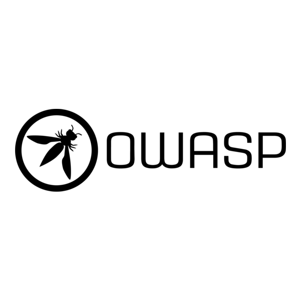
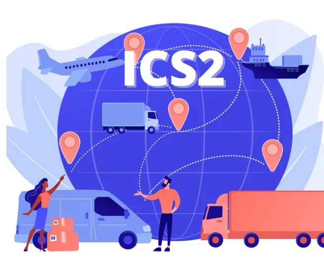
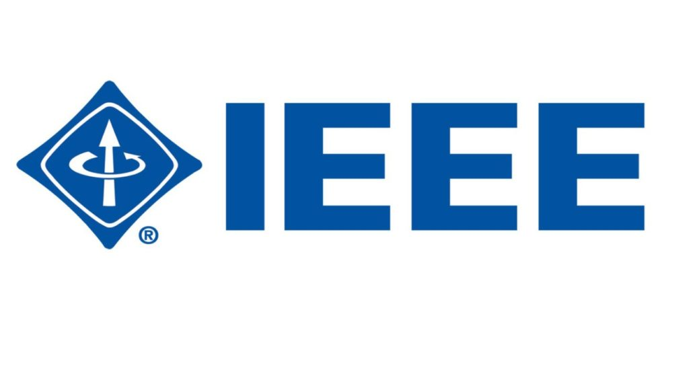

Professional Associations
I'm actively involved with several professional organizations that align with my career interests in cybersecurity, web development, and data science. Here are some of the groups I'm part of:

OWASP
The Open Web Application Security Project is a nonprofit foundation that works to improve the security of software. I participate in local chapter meetings and contribute to security documentation.
Visit Website
(ISC)²
International Information System Security Certification Consortium offers cybersecurity certifications like CISSP. As a student member, I access educational resources and networking opportunities.
Visit Website
IEEE Computer Society
As part of IEEE's computing professional community, I stay updated on emerging technologies through their publications and conferences, particularly in security and data science.
Visit WebsiteOrganizations I Plan to Join
- Cloud Security Alliance (CSA): To deepen my knowledge of cloud security best practices.
- ISACA: For governance, risk management, and compliance insights.
- Front-End Developers Association: To connect with UI/UX professionals.